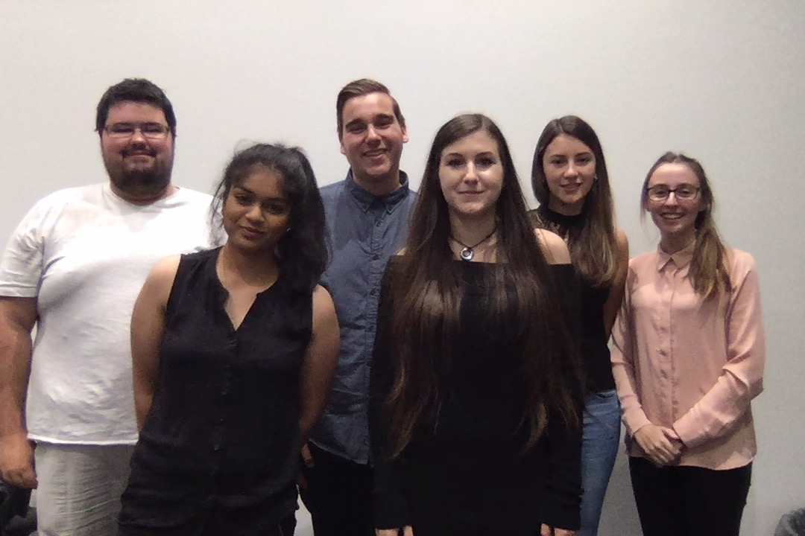

About Four Corner Solutions
Four Corner Solutions is an Australian based company who pride themselves in creating effective, elegant solutions to any problem a company throws our way.
Our team is comprised of a group of like-minded individuals who are passionate about building our solutions in an efficient yet effective manner.
With a design philosophy that is based on maintaining a modern and simplistic yet powerful system and a development environment that is flexible yet timely, Four Corner Solutions does all the hard work for you, ensuring that the end product is something your company can be proud of.
At Four Corner Solutions, we check every corner, so we miss nothing!
Our Philosophy
Our philosophy is to create modern, simplistic, yet powerful business solutions catered to the specific needs of each business.
Our philosophy is to improve engagement with and quality of early childhood observations and documentation, and streamline the process.
Our Team
Four Corner Solutions is comprised of a group of people who are like-minded in our mission to create efficient business solutions. Our team comes from various backgrounds, with a wide range of skills in all areas.
Cassandra Kalabric
Project Manager
Matthew Mauri
Business Analyst
Ivana Ozakovic
System Developer/Technical Architect
The System Developer/Technical Architect of FCS, with a background in Computer Science, majoring in Multimedia and Game Development, Ivana strives to code her way to solving all your business problems. In collaboration with Sima, Ivana defines and designs the overall system architecture in order for it to be understandable and doable from a programming perspective. Also, because of her Graphic Design skills, she’s able to use her creativity to make sure the system is designed in a simple, but innovative way, by following current standards in the industry.
Nicole Lardner
Business Analyst/Content Manager
Sima Narain
Technical Architect Manager
Being the Technical Architect Manager of FCS, Sima works with Ivana to ensure the design of the overall system architecture is comprehendible by the teams system developers. With her background in Information Technology and major in Network Design and Management, she utilises her knowledge to assist and communicate ideas with Ivana which can be incorporated into our project.
Damon Walker
System Developer
One of the system developers of Four Corners. Background in Computer Science, with Game Development and System/Cyber Security. Damon is one of the team that builds the system. He, along with the rest of the system developers make sure that what we build in a system is what the users want and can be relied upon